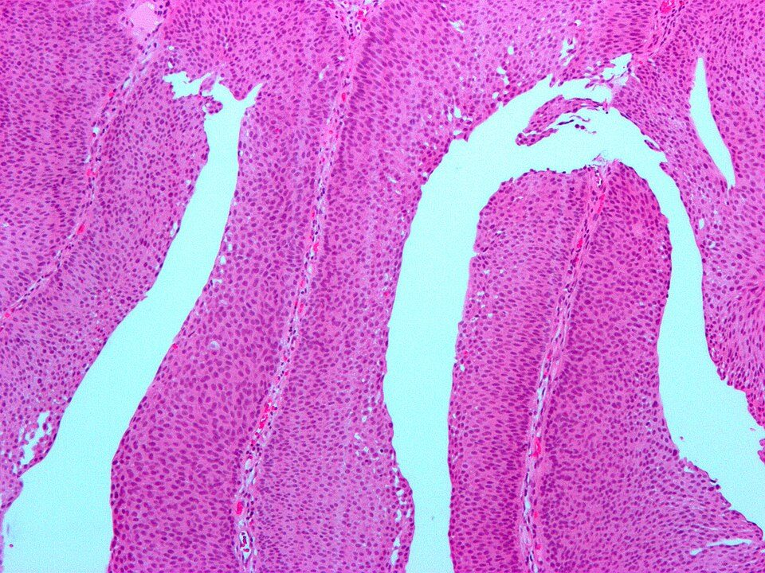

General information only. It does not replace advice from your care team and should not be used to choose a treatment.


At a glance
| How common | 5-10% of urothelial tumours |
| Risk factors | Tobacco, Lynch syndrome, aristolochic acid (herbal remedies, Balkan nephropathy), phenacetin |
| Symptom | Blood in the urine, flank pain |
| Treatment | Nephroureterectomy; kidney-sparing endoscopic treatment for low risk; chemotherapy after surgery |
What it is
The same urothelium lining the bladder covers the calyces, renal pelvis and ureters. Tumours here are less common but often more invasive at diagnosis. 20-50% of patients later develop a bladder tumour.
Risk factors
- Tobacco.
- Lynch syndrome: the third most common cancer in this syndrome; DNA repair testing is recommended in all cases, especially under 60 or with family history.
- Aristolochic acid: found in Aristolochia plants, used in some Chinese herbal remedies and slimming products, and the cause of Balkan endemic nephropathy.
Diagnosis and treatment
- CT urography and ureteroscopy with biopsy and selective cytology.
- Low risk (small, low-grade, single tumour): kidney-sparing endoscopic treatment with laser, or mitomycin gel instillation.
- High risk: radical nephroureterectomy with a cuff of bladder, followed by platinum chemotherapy (POUT trial), which reduces relapse.
- Advanced disease: as for bladder cancer, with enfortumab vedotin and pembrolizumab.
- Follow-up cystoscopies because of the risk of bladder tumours.
See also: Bladder and kidney cancer, Inherited risk and genetic counselling.
History · Medicapedia
Upper tract urothelial cancer in the history of medicine
How it was discovered, who studied it and how its treatment changed over the centuries, told on Medicapedia, our sister site on the history of medicine.
Read the history on Medicapedia ↗Sources
- Rouprêt M, et al. European Association of Urology Guidelines on Upper Urinary Tract Urothelial Carcinoma: 2023 Update. Eur Urol. 2023;84:49-64.
- Birtle A, et al. Adjuvant chemotherapy in upper tract urothelial carcinoma (POUT). Lancet. 2020;395:1268-1277. doi:10.1016/S0140-6736(20)30415-3
- IARC. Plants containing aristolochic acid. Monographs Volume 100A.